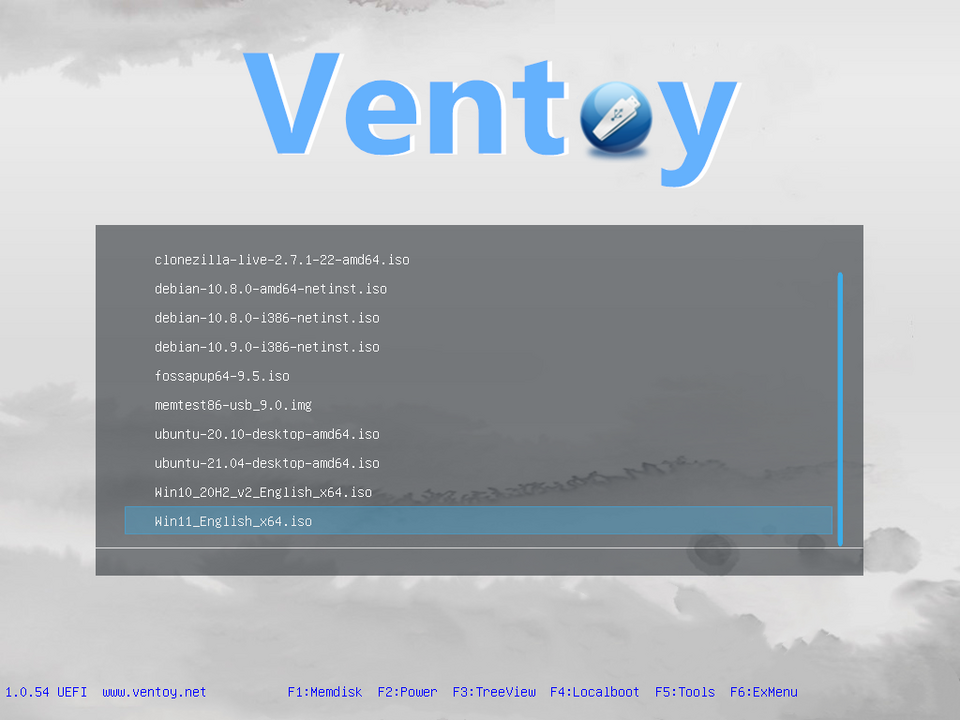

Como criar um pendrive de boot com o Ventoy
O que é o Ventoy
O Ventoy é um programa livre que transforma o pendrive em um disco de boot capaz de guardar várias imagens ISO (arquivos que contêm uma cópia completa de um CD ou DVD de instalação) ao mesmo tempo. Ele não grava a ISO no pendrive: depois de instalado, basta copiar os arquivos .iso para dentro dele, e ao ligar o computador aparece um menu para escolher qual sistema iniciar. No laboratório, um único pendrive teve o Windows 7, o Windows 10 e o Ubuntu juntos.
O que é necessário
Um pendrive de pelo menos 8 GB, o arquivo ISO do sistema e o Ventoy, baixado no site oficial ventoy.net. A instalação do Ventoy apaga tudo o que estiver no pendrive, então salve os arquivos importantes antes.

Passo a passo no Windows
Extraia o arquivo .zip baixado e abra o "Ventoy2Disk.exe". Em Dispositivo, selecione o pendrive, conferindo pelo nome e pelo tamanho para não escolher o disco errado.
No menu Opção > Estilo de Partição, escolha MBR (Master Boot Record) para computadores antigos com BIOS Legacy (o firmware tradicional da placa-mãe) ou GPT (GUID Partition Table) para computadores mais novos com UEFI (o firmware moderno que substituiu a BIOS). Clique em Instalar e confirme os dois avisos. Depois, copie os arquivos .iso inteiros, sem extrair, para dentro do pendrive, que aparece com o nome "Ventoy".
Passo a passo no Linux
Extraia o arquivo .tar.gz e use a interface gráfica "VentoyGUI" ou o terminal. Pelo terminal, identifique
o pendrive com lsblk e, dentro da pasta do Ventoy, execute sudo sh Ventoy2Disk.sh -i
/dev/sdX, trocando sdX pelo nome do pendrive (por exemplo, sdb). Para usar GPT no lugar de MBR,
adicione a opção -g.
Como iniciar pelo pendrive
Com o pendrive conectado, ligue o computador e aperte a tecla do menu de boot, que muda conforme o fabricante da placa-mãe (geralmente F12, F11, F8 ou Esc). Escolhendo o pendrive, aparece o menu do Ventoy com a lista das ISOs.
No nosso trabalho, o Ventoy funcionou bem com sistemas mais novos, mas não conseguiu instalar o Windows XP. Para esse caso, usamos o WinSetupFromUSB, como explicado na página Erro de boot do Windows XP no Rufus e no Ventoy.